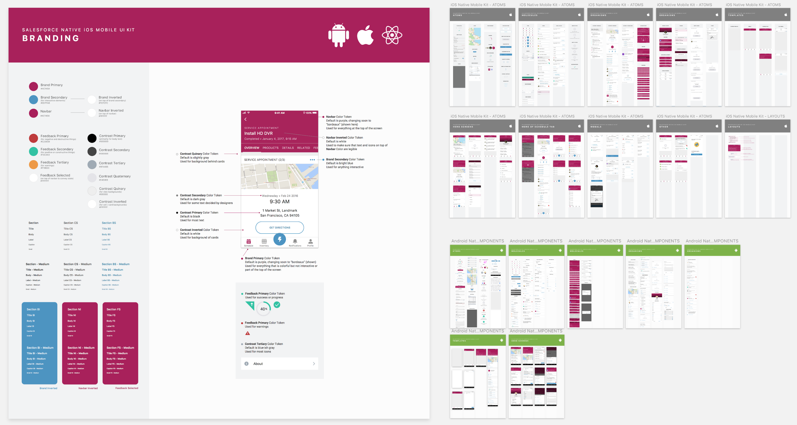

ABOUT FIELD SERVICE LIGHTNING
I’m a product designer on the Service Cloud design team at Salesforce. Currently, I am working on a product called Field Service Lightning (FSL). I have been very involved in new features on the mobile app, including lists for service appointments.
FSL allows companies to benefit from the power of the Salesforce platform while managing their field service operations. Our customers use FSL to assign jobs (i.e. work orders) to their mobile workers and help them manage their day-to-day operations.
The FSL mobile app, available for both iOS and Android, lets mobile technicians track their work orders and see all relevant information to get to their sites at the right time, and get up-to-speed on the tasks they need to complete.

Field Service Lightning Mobile App and Dispatcher Console
THE PROBLEM
Salesforce is a very configurable platform, and admins are able to set up their own custom, filtered lists of standard objects, including service appointments. At the time of this project, Salesforce supported creating lists of service appointments, but V1 of the mobile app did not show them. Customers were asking for this feature so that their mobile workers could see appointments grouped in categories such as “High Priority Appointments” or “Appointments in Northern California.” We needed a way to show the admin-configured list views to mobile workers using the mobile app.

Existing Admin Configuration for List Pickers in Salesforce FSL Setup
Original App Design that Didn't Show the Admin-Configured Listviews
EXPLORING IDEAS
I started by exploring patterns that we might be able to use to surface a list of service appointments on the “Schedule” tab in the mobile app. Since it was the most extensible and most closely matched the Salesforce admin experience, I decided to move forward with the dropdown list picker.

List Picker Explorations
DESIGN SOLUTION
My designs placed the name of the currently-selected list at the center of the navigation bar. However, this displaced the date-picker and current selected day. To handle this, I moved the date picker to button on the top right, and moved by the link to “Today” and the current date to other locations. I also added “Tomorrow” based on our understanding that many mobile workers check their work for the upcoming day. I changed the buttons to use icons instead of text so they would be more visually distinct from the new text in the navigation bar.
We were also able to move the map into the same view as the list of service appointments, so users could see both the location and the details of the appointments at once. The following image and video show the current implementation of this feature.
Sample Design Specification for List Picker Feature

Recording of Current List Picker Design
COLOR TOKENS
The Field Service mobile app uses a color branding system that avoids any hard-coded colors in the app. Admins can configure any color to match their own company’s brand, and even to invert the text and background color to turn on “Dark Mode.” I used this existing system to communicate the color token assignments with developers building the new feature.
Sketch Component Library Showcasing the FSL Branding System

Color Tokens for List Picker (for an Earlier App Version)
REFLECTIONS
Working on this project reminded me how important it is for designers to have a deep understanding of the system that they are designing for. In this case, I needed to understand not only what types of lists admins might create, but also how to configure them in Salesforce on my own, in order to fully understand the design constraints.